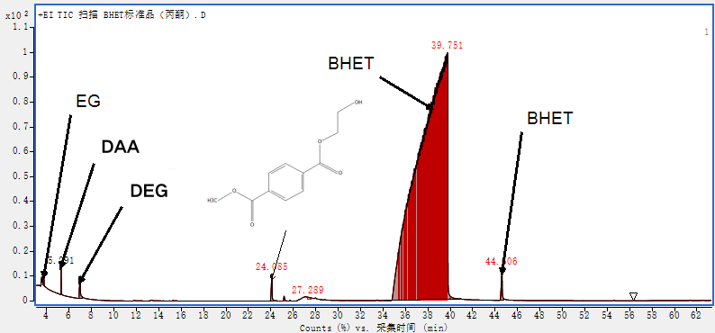
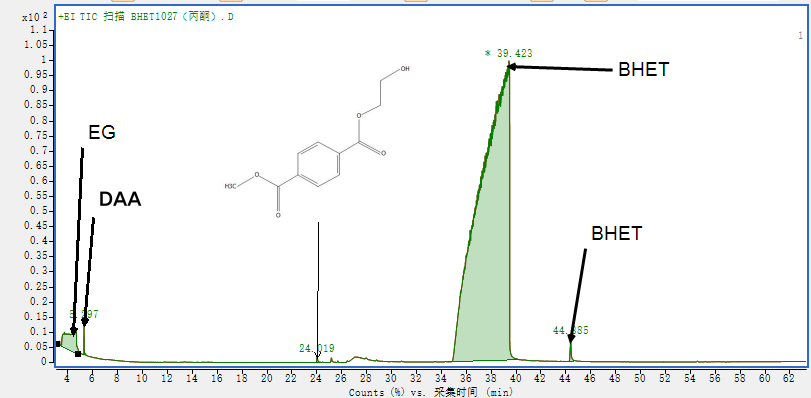
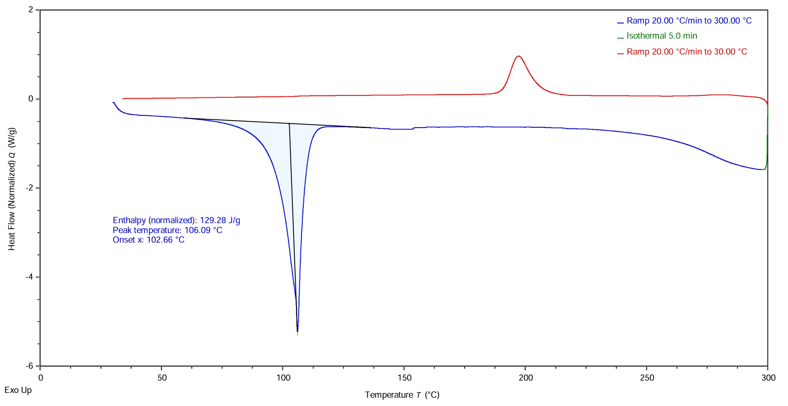
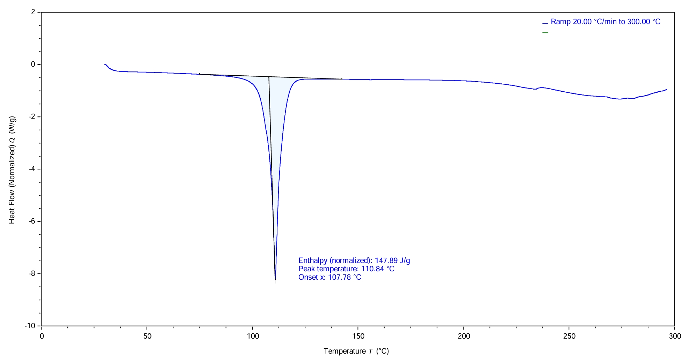
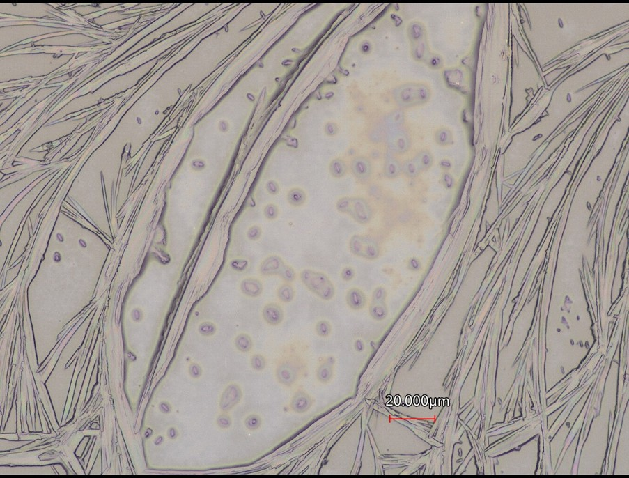
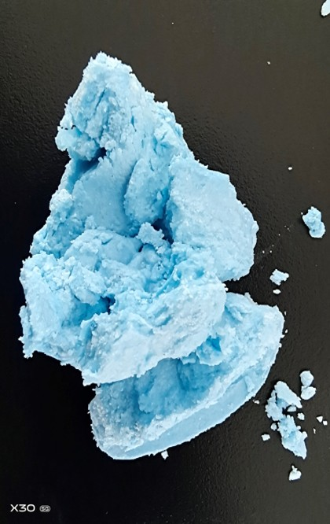
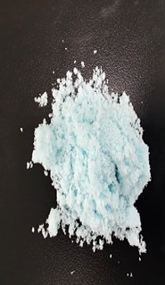
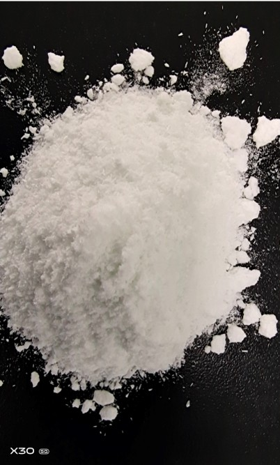
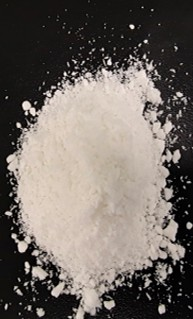
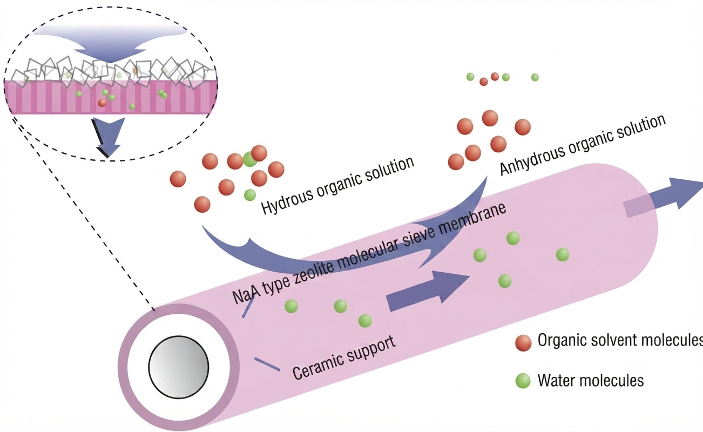

Purification/Decolorization/Solvent Recovery
4. Purification and Crystallization Separation
4.1 Purification and Separation Process
- Thermal Water Washing: The depolymerization product (a mixture of BHET monomers, dimers, oligomers, and EG) cooled to approximately \(196^\circ\text{C}\) or lower is introduced into hot water above \(90^\circ\text{C}\). After thorough mixing, multi-stage filtration is performed.
- Separation Mechanism: Given that the melting point of BHET is around \(106 \sim 110^\circ\text{C}\) with a melting range starting near \(90^\circ\text{C}\), water acts primarily as a physical viscosity reducer rather than a dissolving solvent in the hot water system above \(90^\circ\text{C}\) (as BHET solubility in water is extremely low). This temperature selection cleverly avoids the range of complete monomer melting and agglomeration, ensuring that oligomers and insoluble solid impurities are efficiently retained through multi-stage filtration.
- Crystallization and Refining: The filtrate, composed mainly of \(\text{BHET}\), \(\text{EG}\), and water, can be decolorized or purified using activated carbon adsorption. Upon cooling the hot filtrate to room temperature, a large amount of high-purity \(\text{BHET}\) crystallizes out and is separated via secondary filtration to yield crude or polymer-grade monomer. Recrystallization can be further applied if higher BHET purity is required.
4.2 Advanced Characterization Methods
To accurately verify the chemical structure and purity of the depolymerization products, an external standard calibration method was employed using a commercial BHET standard (purity \(85\%\), purchased from Sigma-Aldrich) as a reference for systematic coupled characterization:
Pyrolysis Gas Chromatography-Mass Spectrometry (Py-GC-MS) Analysis: Analyzed using a micro-pyrolyzer (CDS Pyroprober) coupled with a gas chromatography-mass spectrometer (Agilent 7890/5977).
Differential Scanning Calorimetry (DSC):
Instrument Model: TA DSC25
Testing Conditions: \(3 \sim 5\,\text{mg}\) of dried sample was weighed into an aluminum crucible and tested under a high-purity nitrogen atmosphere (flow rate of \(50\,\text{mL/min}\)).
Purpose: Determine the melting point and phase change enthalpy of the product.
4.3 Results and Quality Verification
Under optimized reaction conditions, the depolymerization process successfully cleaved high-molecular-weight polymer chains into smaller fragments.
- GC-MS Verification: As confirmed by Py-GC-MS analysis, the liquid product spectra predominantly exhibit characteristic signals corresponding to bis(2-hydroxyethyl) terephthalate (BHET) along with unreacted glycol components, verifying the selective cleavage of ester bonds.

- GC-MS spectrum of the commercial BHET standard.

- GC-MS spectrum of the recovered BHET product.
- Melting Performance: To further assess the purity and thermal behavior of the recovered product, differential scanning calorimetry (DSC) tests were conducted. The crude crystalline BHET product obtained after simple hot water washing exhibits a distinct endothermic melting peak with a peak temperature of \(110.84^\circ\text{C}\) (onset temperature at \(107.78^\circ\text{C}\), melting enthalpy of \(147.89\,\text{J/g}\)).
- Comparative Superiority: Compared with the commercial BHET standard (purity \(85\%\), peak melting temperature of \(106.09^\circ\text{C}\), enthalpy of \(129.28\,\text{J/g}\)), the recovered crude product exhibits a higher and sharper melting transition, demonstrating exceptional structural integrity and high purity following the facile water-washing purification step.

- DSC melting curve of the commercial BHET standard.

- DSC melting curve of the recovered BHET product.
- Theoretical Foundation: Crucially, the thermal behavior obtained from DSC evaluation provides the fundamental theoretical basis for the separation strategy: the melting point of BHET is significantly lower than that of its corresponding dimers and oligomers.
- Dual-Action Hot Water Processing: Leveraging this thermal difference, hot water treatment plays a dual role in the purification process—firstly by physically reducing system viscosity, and secondly by maintaining target BHET in a molten/dissolved liquid state within a specific temperature window while higher polymers remain solid, thereby enabling high-efficiency physical filtration.
To ultimately validate the practical utility and chemical reactivity of the recovered monomer rather than relying solely on spectral characterization, the obtained BHET product was directly utilized in subsequent re-polymerization experiments. The successful regeneration of high-molecular-weight polyester from the recovered monomer irrefutably confirms that the isolated product is authentic, high-quality BHET suitable for closed-loop chemical recycling.
5. Integrated Purification and Decolorization via Multi-Stage Filtration
5.1 Core Concept: Synchronous Synergy of Purification and Decolorization
- Process Integration: In the recycling strategy of this study, purification and decolorization are not two independent and cumbersome processes, but are efficiently completed in synchrony through multi-stage filtration within the same step.
- Synergistic Enhancement Mechanism: By delicately controlling the depolymerization endpoint and moderately retaining oligomers, multi-stage filtration not only achieves efficient physical separation of monomers from solid impurities, but also seamlessly embeds pigment capture and decolorization into the process, significantly alleviating the burden on the terminal refining section from the source.
5.2 Role of Multi-Stage Filtration in Decolorization
- Physical Interception of Pigments: Some industrial pigments are inherently insoluble in water and are directly and physically intercepted alongside insoluble matter during multi-stage filtration.
- Oligomer Adsorption Carrier: The residual solid intermediate products feature a loose microscopic structure and specific surface area, possessing a natural affinity for pigments within the polyester matrix, thereby tightly anchoring and filtering out micro-spherical pigment particles.

- Optical microscopy image showing pigment particles adsorbed on the surface of solid oligomers.
5.3 Filtrate Purification and Terminal Safeguard
- Filtrate Evolution Process: From the deep blue and turbid state of the initial unfiltered product (\(\text{Filtr0}\)), suspended pigments and impurities are stripped away layer by layer through progressive multi-stage filtration (\(\text{Filtr1} \sim \text{Filtr2}\)), ultimately presenting an extremely high purity close to pure white in the final product (\(\text{Filtr3}\)).
Visual Evolution of Multi-Stage Filtration Products

Initial Unfiltered

1st-Stage Filtration

2nd-Stage Filtration

Final Purified
- Activated Carbon Synergy: A trace amount of activated carbon adsorption is supplemented in the final filtrate as a dual safeguard, ensuring that the ultimately obtained monomer fully meets the high-quality requirements for re-polymerization.
6. EG and Water Separation and Recovery via Pervaporation
6.1 Pervaporation Separation Mechanism
- NaA-Type Zeolite Molecular Sieve Membrane: The separation of ethylene glycol (EG) and water is achieved using a NaA-type zeolite molecular sieve membrane module via pervaporation (PV).
- Molecular Sieve Mechanism: Based on the difference in kinetic diameters (\(\text{H}_2\text{O}\) is \(0.27\,\text{nm}\), while \(\text{EG} > 0.43\,\text{nm}\)), water molecules selectively pass through the membrane pores while organic solvent molecules are retained, enabling highly efficient water removal and closed-loop recovery of the EG solvent.
6.2 Comparative Advantages over Conventional Distillation
- Energy and Azeotropic Limitations: Unlike conventional distillation—which is energy-intensive and often hindered by high boiling points or azeotropic behavior between water and glycols—pervaporation relies on precise molecular-size exclusion rather than relative volatility.
- High Efficiency and Energy Saving: This membrane-based separation avoids massive thermal phase changes for the bulk solvent, offering superior separation factors, lower operational energy consumption, and high purity for the recycled EG stream.

- Schematic diagram of the pervaporation separation process using a NaA-type zeolite molecular sieve membrane for water-organic solvent mixtures.